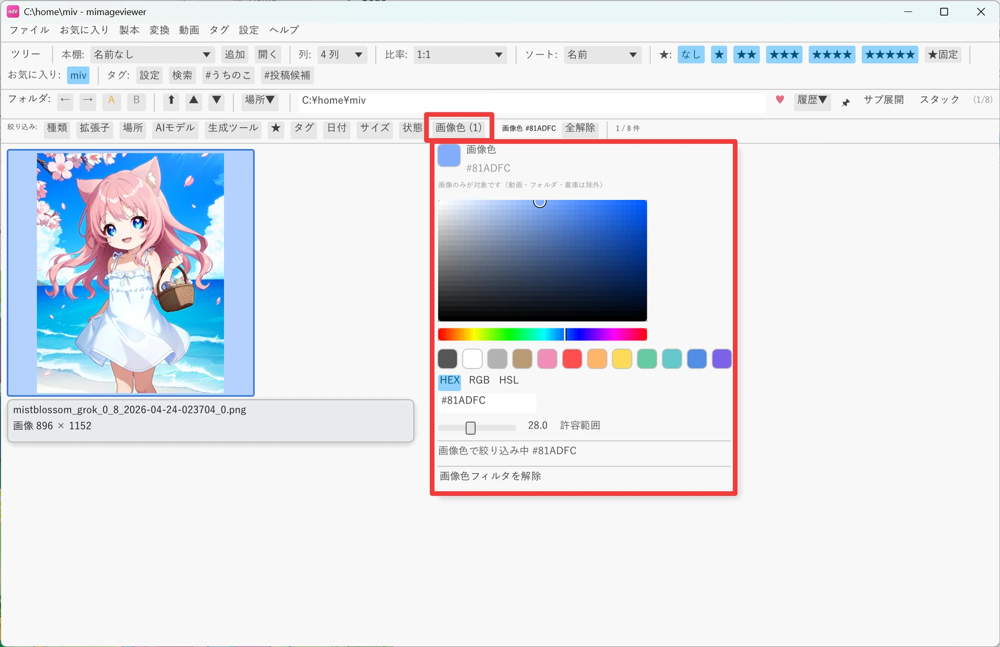
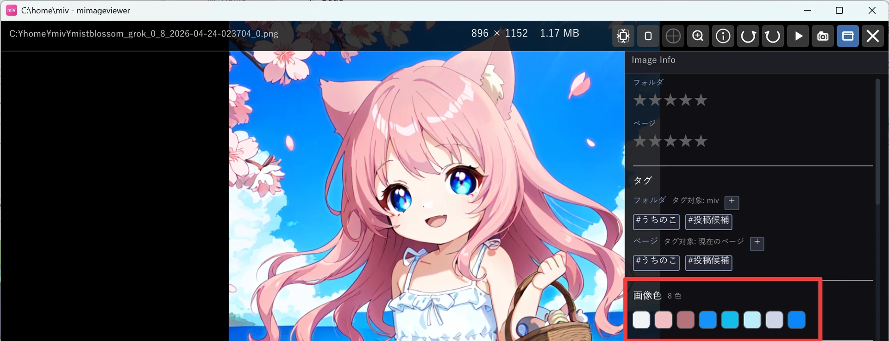

色で絞り込む（カラー検索）
「青空の写真だけ集めたい」「赤っぽいイラストを探したい」というときは、色そのもので絞り込めます。 タグや日付では拾えない「見た目の色」を条件にできるのが特徴で、いま表示しているフォルダ・ZIP・PDF に対してその場で使えます。
「絞り込み:」バーの「画像色」を開く
ツールバーの下にある「絞り込み:」バーから「画像色」メニューを開きます。ボタンが見当たらないときは、 「絞り込み:」ラベルを右クリックして表示するボタンを選び直してください。
- カラーピッカーから色を選ぶほか、プリセット色や HEX / RGB / HSL の入力でも色を指定できます。
- 許容範囲スライダーで、選んだ色にどれだけ近い色まで許すかを調整します。
- タグ・日付・状態など、他のスマートフィルタの条件と組み合わせて使えます。

使った瞬間にその場で調べる
色や許容範囲を操作すると、いま表示中の画像をその場で調べて主要色を求めます。調べ終わった後の 色や許容範囲の変更は、保存済みの一時結果にすぐ反映されるので、スライダーを動かしながら絞り込み具合を確かめられます。
- 調査中は「絞り込み準備中 ◯/◯」の進捗が表示され、途中でキャンセルできます。
- 調べた結果は保存されません。別のフォルダへ移動すると破棄され、設定やデータベースには何も追加されません。
- サムネイルのキャッシュがあればそれを使うため、表示済みのフォルダでは高速に絞り込めます。
未調査の画像が非常に多いフォルダでは、いきなり調べ始めずに「スキャン開始」の確認が入ります。
「キャンセル」を選べば調査せずに戻れます。
フルスクリーンのメタデータパネルから起動する
1 枚を見ながら「この色で他の画像も探したい」と思ったら、フルスクリーン表示のメタデータパネルが近道です。
- フルスクリーン表示中は、右のメタデータパネルにその画像の主要色スウォッチが並びます。
- スウォッチをクリックすると、その色で画像色フィルタがそのまま開始されます。

対象になる範囲
画像色での絞り込みは、通常のフォルダ・ZIP・PDF を表示しているときに使えます。動画やフォルダ、 ZIP / PDF などのコンテナ自体は色で絞り込む対象に含まれず、色フィルタを使うと一覧から外れます。
| 状況 | 画像色フィルタ |
|---|---|
| 通常のフォルダ / ZIP / PDF を表示中 | 使える |
| 絞り込み対象そのものが画像 | 対象になる |
| 動画・フォルダ・ZIP / PDF などのコンテナ | 対象外（一覧から外れる） |
| タグビュー・全文検索結果などの横断ビュー | 使えない |
スマートフィルタの他の条件（種類・タグ・日付・状態など）との組み合わせ方は
サムネイル一覧リファレンスの「画像色で絞り込む」にまとまっています。